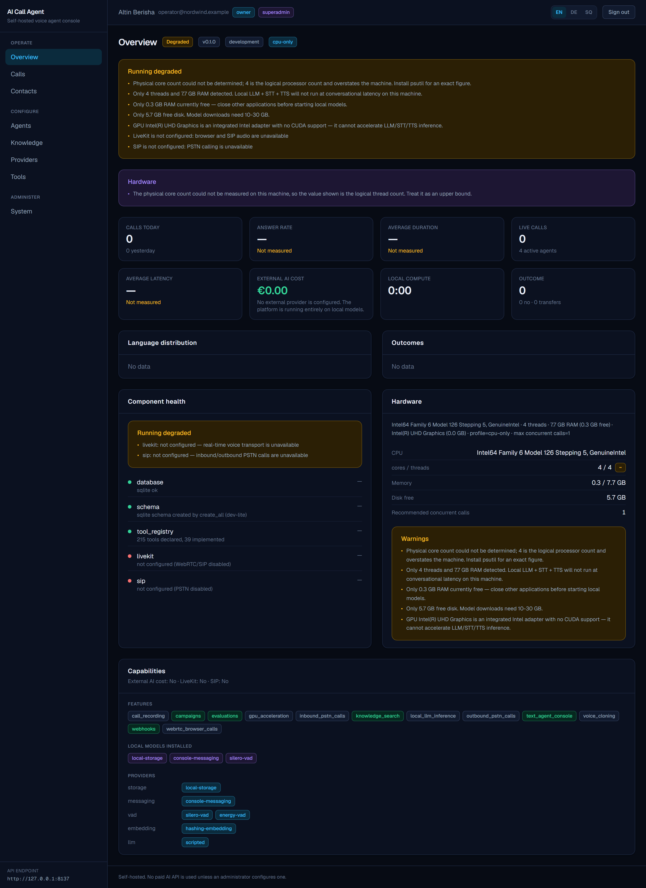
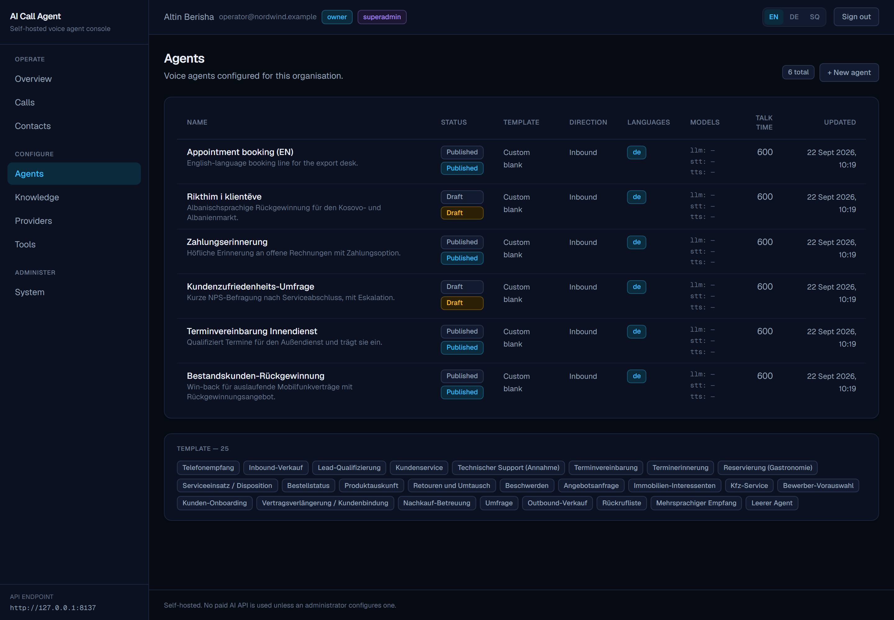
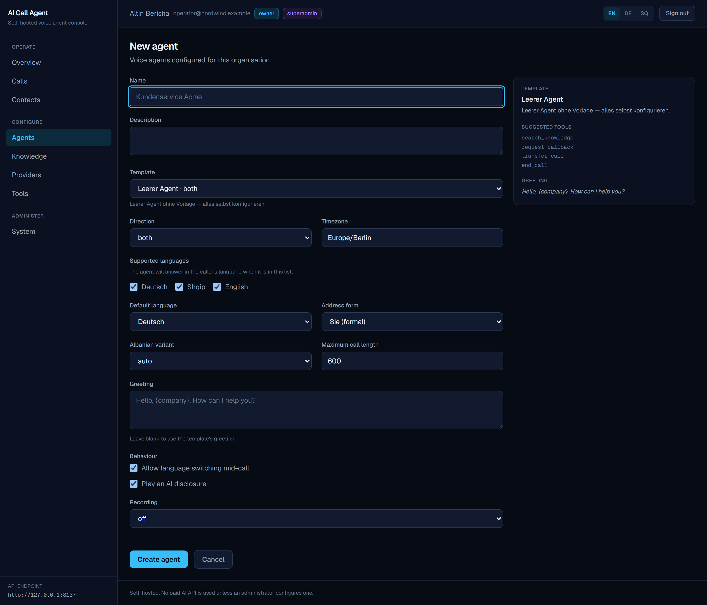
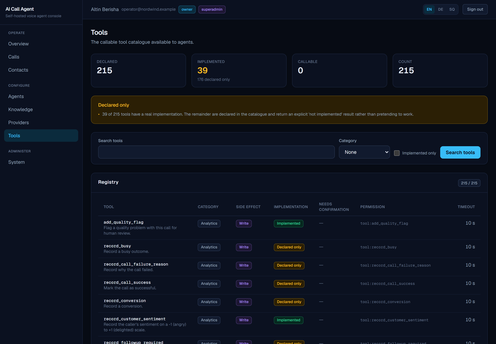
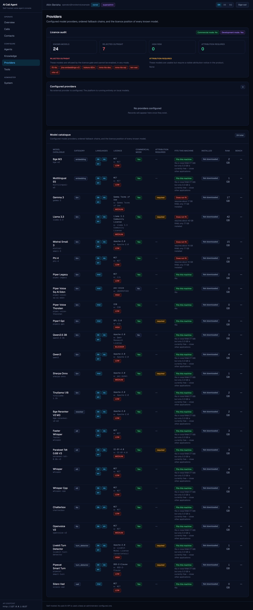
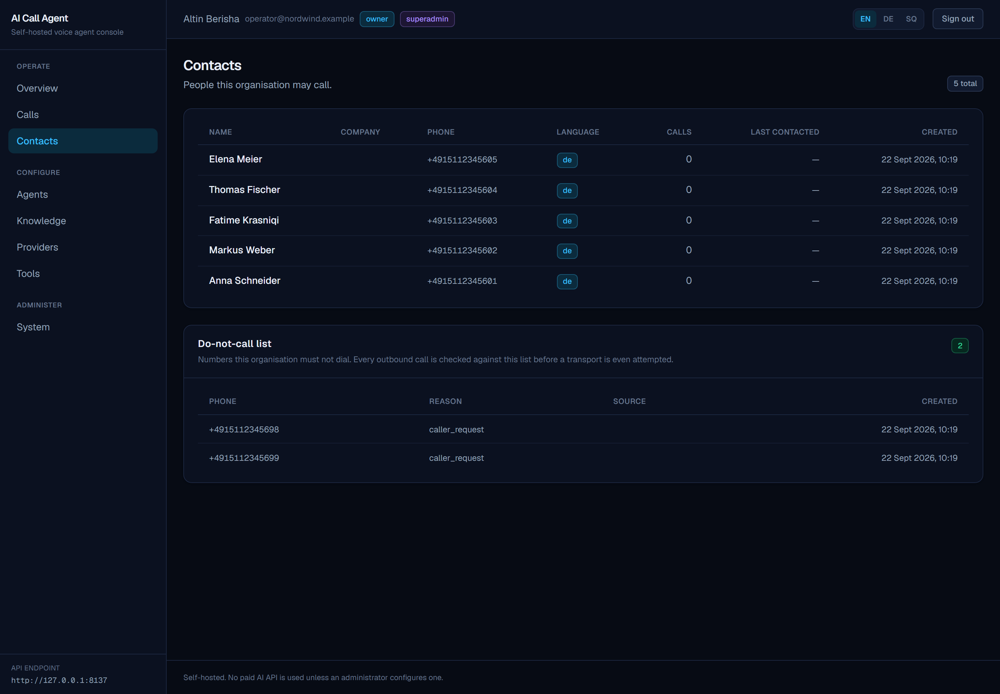
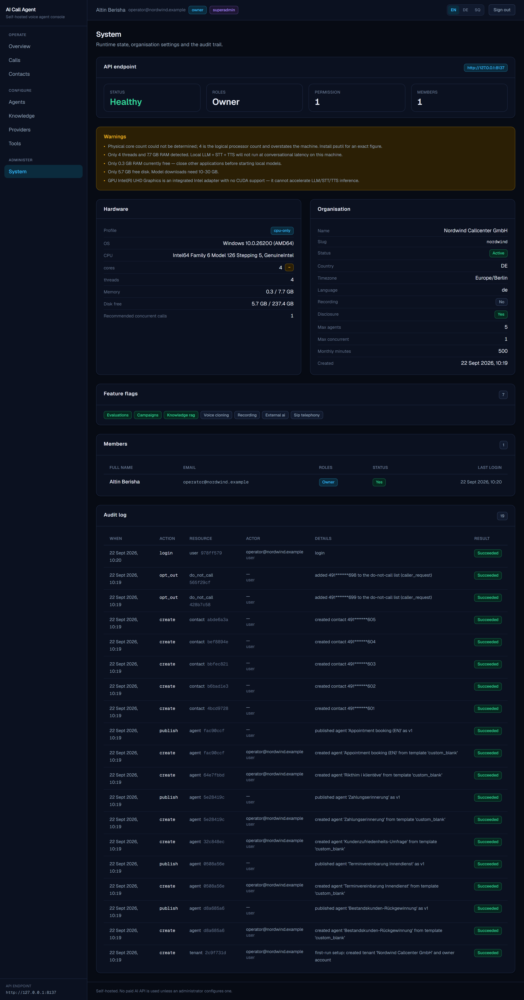
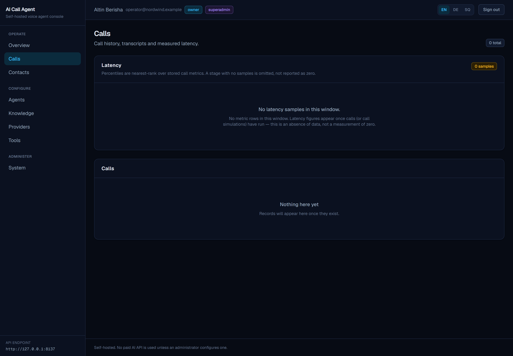
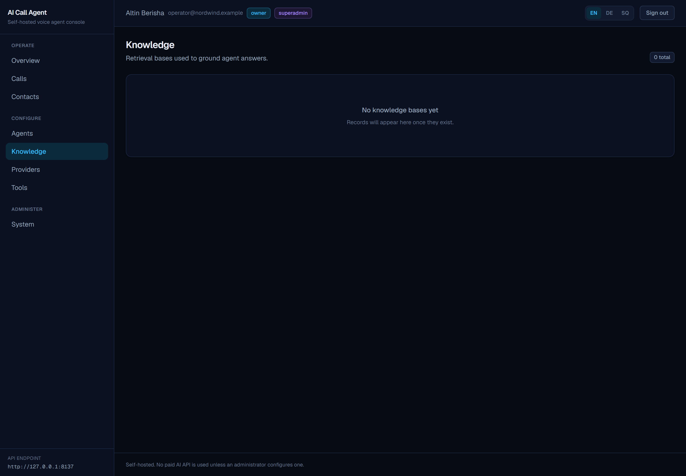

A multi-tenant, multilingual AI call-agent platform for German, Albanian and English — designed to run entirely on your own hardware. Compliance is enforced in Python before a dial is attempted, never by asking the model for permission.
The interesting part is not what it does. It is that every claim in this repository is measurable, and the gaps are named out loud.
One turn, from the caller speaking to the agent speaking back. The green steps are the ones that run in Python — outside the model's control — which is where every compliance guarantee actually lives.
The compliance step is the point. A DNC check, calling-hours check and consent check all run in Python before the transport is attempted. The model is never asked whether it is allowed to make the call — so a prompt injection cannot talk the system into dialling someone who opted out. A test pins the ordering: a DNC number must be refused for being on the DNC list, not for a missing transport.
Frame VAD, adaptive pause timing, a semantic/punctuation heuristic, and a contextual override. Trailing connectives — "und", "dhe", "and" — suppress end-of-utterance even after a pause, so a caller who pauses mid-sentence is not interrupted.
Retrieved knowledge is fenced in <<<UNTRUSTED_DATA>>>
markers and labelled as data, not instructions. A document in the knowledge base cannot
issue the agent orders.
When a real model is not available, the provider returns a
simulated: true stamp rather than quietly producing plausible nonsense.
Missing data is null, never 0.
A Next.js 16 operations console — dark-first by design, with semantic colour tokens and WCAG AA contrast on every text/background pairing. Eleven routes, in English, German and Albanian.

degraded with the exact reasons, unmeasured metrics read
— Not measured rather than 0, and live/LiveKit/SIP all show
plain not configured.







—, never 0: "no data" and "zero" are different facts, and the
API keeps them distinct all the way to the screen.

These are real screenshots of a running system, not mockups. They were
produced by scripts/capture_demo.py, which starts the API on a throwaway
database, seeds realistic content through the public HTTP API, starts the console,
and then signs in through the actual login form with a real browser before capturing. If any
page failed to render — a redirect, an error screen, a missing marker — the harness would
fail rather than ship the image.
This section exists because the alternative — a capabilities list with no gaps in it — would be a lie. Everything below is measured by running code, and the limitations are stated as plainly as the achievements.
| Capability | Status | Detail |
|---|---|---|
| REST API — 12 routers, 173 operations | Working | 146 tests pass; the type checker is clean across 95 files. |
| Multi-tenant isolation & roles | Working | Proven by a test that onboards a real second organisation then fails to see the first tenant's data — across 8 resource types. |
| Agent lifecycle: create → publish → version | Working | Including rollback and a prompt hash on every published version. |
| Text-mode agent loop (full turn pipeline) | Working | Driven end-to-end through the console and through the simulation runner. |
| Knowledge ingestion, retrieval, gap detection | Working | SQLite brute-force retrieval. The pgvector/HNSW path is written but never benchmarked — no Postgres here. |
| Compliance engine — DNC, hours, consent, disclosure | Working | Enforced outside the model, with refusal precedence pinned by a test. |
| Campaigns, dry-run by default | Working | A campaign cannot dial by accident. |
| Background worker — queue, retries, retention | Working | Atomic claim (exactly-once), HMAC-signed webhooks, 6-step backoff, SSRF allowlist. Verified by running it twice — the second run created 0 duplicates. |
| Evaluation suite — 40 scenarios, DE/SQ/EN | Working | Scenarios are defined; the runner exercises the text path. |
| Licence gate in CI | Working | Four checks. It caught real drift on its first run — and then caught a bug in its own logic. |
| Console — 11 routes, EN/DE/SQ | Working | Verified against a live API: HTTP 200, shell rendered, page marker present, no error digest. Unauthenticated requests redirect to sign-in. |
| Voice worker — realtime pipeline | Not built | Scaffolded only: a dependency manifest and six 0-byte package stubs. Never run. |
| WebRTC / SIP calls | Not runnable | No LiveKit server is running and there is no GPU for local speech models. |
| Local LLM / STT / TTS at conversational latency | Not runnable | Measured hardware limit, not a code limit. See below. |
| 176 of 215 tools | Stubs | The registry, gating and validation are done and tested. The bodies are not. |
| SIPp suite, real PSTN calls | Not started | Telephony is modelled and has APIs; the gateway config has never been started. |
| Email delivery for invites | Missing | Invite tokens are returned in the API response instead. |
Measured, not assumed:
$ python scripts/dev.py hardware CPU Intel Core i3-1005G1 @ 1.20 GHz — 2 physical cores / 4 threads RAM 7.7 GB total, ~1.6 GB free GPU Intel UHD Graphics — integrated, no CUDA Profile CPU_ONLY — below the spec's Profile A LiveKit + Postgres + a local LLM + Whisper + TTS simultaneously on 4 threads will not produce a conversational response. This is a hardware limit, not a code-quality limit.
The most important caveat in this project. The voice pipeline is where nearly all the remaining risk lives — audio buffering, jitter, barge-in, codec negotiation, latency under load — and none of it has been tested. Treat every voice-adjacent claim in this repository as designed, not demonstrated.
A monorepo. The provider abstraction is the load-bearing decision: swapping a simulated model for a real one is a provider registration, not a rewrite.
The platform detects its own hardware profile and adapts. Three deployment shapes are supported: dev-lite on a laptop (SQLite, text-mode agent loop, simulation providers, full test suite, no containers), LOCAL on a 16 GB machine (Docker Compose core plus an optional LiveKit profile), and GPU (vLLM + faster-whisper + Chatterbox).
Nothing is faked to make a demo look better. Where a component cannot be exercised on the development hardware, the documentation says so and names the exact command a user with the right machine should run.
docs/IMPLEMENTATION_STATUS.md — every number tied to how it was measured.HANDOVER.md — what is done, what is not, and the traps.docs/KNOWN_ISSUES.md — every limitation, named.docs/TEST_REPORT.md — what the tests actually assert.scripts/licence_gate.py — a gate that has failed before.The backend and console run on an ordinary laptop with no GPU and no containers. Voice does not — that needs hardware this project was developed without.
# 1. clone and set up the virtual environment + workspace packages git clone <this-repo> && cd ai-call-agent python scripts/dev.py setup # 2. create the database and seed a first administrator python scripts/dev.py migrate python scripts/dev.py seed # 3. start the API (uvicorn, reload) python scripts/dev.py api # 4. in a second terminal, start the console cd apps/web && npm install && npm run dev # -> http://localhost:3000
Then verify that the state you cloned is the state that was claimed:
$ python scripts/dev.py verify -> licence gate: PASS -> lint: PASS -> types: PASS (mypy, 95 source files, clean) -> tests: PASS (146 passed, 0 failed, 0 skipped) VERIFY PASSED: licence gate, lint, types and tests are all green
Note on that output. On Windows the test step prints an override line,
because the sandbox's bulk-delete guard intercepts pytest's teardown and pollutes its exit
code. Rather than trust a lying exit code — or delete the step, which is how a
never-run type checker once let four real bugs ship — the gate re-derives the verdict from
pytest's own XML report. It was negative-tested: real failures, a corrupt report and an
empty report all still produce FAIL.